Las funciones periódicas que se presentan en problemas prácticos con frecuencia son bastante complicadas y es deseable representarlas en términos de funciones periódicas simples. Casi cualquier función periódica f(t) de periodo 2𝛑 que aparezca en las aplicaciones (por ejemplo, con relación a vibraciones) puede representarse por una serie trigonométrica la cual se denominará serie de Fourier de f.
Si f(t) es una función periódica de periodo 2𝛑 que puede representarse por una serie trigonométrica
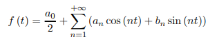Suponiendo que la serie converge y que tiene a f(t) como su suma, se desea determinar los coeficientes an y bn de la serie trigonométrica correspondiente.
Al integrar ambos miembros se obtiene:
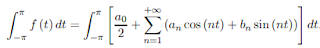Si es posible realizar la integración término a término de la serie, se obtiene
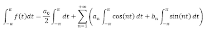donde el primer termino del segundo miembro:
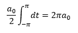sabiendo que las integrales del segundo miembro son cero, consecuentemente
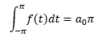es decir,
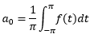Determinando ahora a1, a2, ...y b1, b2,... se multiplica la ecuación principal por cos(mt), donde m ∈ Z+, luego se integra de -𝝿 a 𝝿:
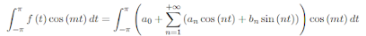Al integrar término a término, el segundo miembro queda
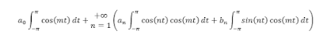La primera integral es cero, por lo tanto
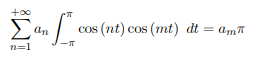y también
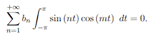por lo tanto
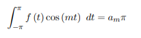para todo m ∈ Z+ Para determinar b1, b2, ... se razona de manera análoga a lo anterior pero ahora multiplicando
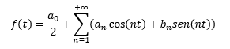por sen(mt) , donde donde m ∈ Z+ Al escribir n en lugar de m, se obtienen las llamadas fórmulas de Euler
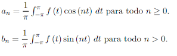Los números dados por las formulas de Euler se denominan coeficientes de Fourier de f(t). La serie trigonométrica
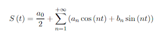con coeficientes
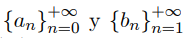dados por las formulas de Euler, se denomina serie de Fourier de f(t).